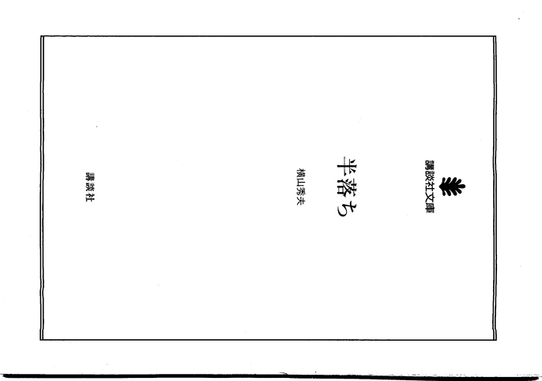

〜2014年7月下旬〜
いきなり関係ない番組を延々と録り続けるというなんとも迷惑なバグ。
2番組同時録画可能だが、そのタイミングで起こると先に録画してるほうが勝つので、
予約録画キャンセルされてしまう。停止も不可能でもうリセットするしかない。
これたまたま目の前で起こったからわかったが、不在の時だと困るよなあ。
容量の問題もあるし。
convertを使ってるとすごく重くなるときがあるが、
export MAGICK_THREAD_LIMIT=1
で解決するかもしれない。
自炊データだと300枚とか400枚になるが、
% convert *.png ...
には無力だった。load averageが40ぐらいになる。
というわけで、
偶奇処理で挙げた例は実は数が少ないときにしか使えない。
/etc/sane.d/dll.confに書いてあるデバイスを順に試すようなので、
使ってるものだけを残してあとはコメントアウトする。
ScanSnapだったらfujitsuだけ残す。
% time scanimage -L device `fujitsu:ScanSnap S1500:106607' is a FUJITSU ScanSnap S1500 scanner scanimage -L 0.13s user 0.30s system 7% cpu 5.770 total % sudo vi /etc/sane.d/dll.conf % time scanimage -L device `fujitsu:ScanSnap S1500:106607' is a FUJITSU ScanSnap S1500 scanner scanimage -L 0.01s user 0.01s system 24% cpu 0.098 total
これだけ違う。フィーダーがジャムるとxsaneの再起動が必要になるが、
なんか気楽に再起動できそうというかさっきからあまりの速さに繰り返し再起動してる。
どういうことかというと整数だけで十分なわけで。
% find foo -printf "%h/%f %AY-%Am-%Ad %AT\n" ./foo 2014-07-24 23:15:04.5202391880
1000ファイルぐらいあるのでなるべくなら不要な小数点以下は消したい。
man findしてもno fractional partは%Acぐらいしかない。
% find foo -printf "%h/%f %Ac\n" ./foo Thu Jul 24 23:15:04 2014
この形式はソートするときに面倒なのであまり好きじゃない。sedで削るのもなあ。
いやprintfなんだから文字数指定できるんじゃないかと試すといけた。
% find foo -printf "%h/%f %AY-%Am-%Ad %.8AT\n" ./foo 2014-07-24 23:15:04
これでいいからふんだんに使われているのか。
例のIFTTTのネコ歩きレシピがなぜか発火しない。
ログを見るとFeed Trigger Errorだらけになってるが、
原因がさっぱりわからない。
そのまま放置しておいたら忘れたころに成功した。
つまりレシピは問題なかったわけだよなあ。
その後はまたエラーになってるので何が原因なんだか。
xsaneでしかスキャンしてなかったから気づかなかったが、
scanimageだと-swcropでauto-cropが可能だ。
そういえばWindows版のソフトはそんな感じだったなと思い出した。
で、これの出来が微妙というかかなりアグレッシブでギリギリまで攻めてくる。
その調整はできない。時間もかかる。
それよりも問題なのが定型を外しているからなのか、
小さなサイズになるとその余った部分が黒くなってしまうこと。

まあ、convertでchopなりcropすればいいだけではあるが、なんでそこだけ?
今使ってるscanimageのパラメータ。
% scanimage --resolution 400 --source 'ADF Duplex' -p --df-action Stop --brightness 20 \ --mode lineart --batch=%03d.pbm --swcrop
それぞれ、400dpi、両面、ページ数表示、じゃむったら停止、ブライト20、(コントラストはデフォルトの0)、
モノクロ画像、バッチモードでファイル名は001.pbm、auot-cropという意味。
じゃむったりしたら--batch-start=$[$(ls *.pbm|wc -l)+1]もつけて再開。
あ、そうそう。-swdeskewで傾き補正ってのもあるが、これは使いものにならない。
傾き補正はちょっと考えている案があるのでまたいずれ。
convertの-deskewでの傾き補正は便利であるが、
行数の少ないページや挿絵のページがあるととんでもなく傾く。
そんなページはどうせなら補正しないで欲しいぐらい。
つまり傾きだけ教えてくれるコマンドがあればいいわけで、
netpbmに含まれる
pamtiltコマンドだとそれが可能。
あとは自分で判断して、たとえば3度を超えてたらなにもしないとかできる。
ただ、Ubuntuのnetpbmはなぜかかなり古くてpamtiltが入ってない。
sourceforgeからdebを取ってくるか自前でmakeするしかない
convertにもpercent escapeに%[deskew:angle]があるので、
% convert foo.png -deskew 40% -format %[deskew:angle]\n" info:
のようにすればいけるはずだが、
UbuntuのImageMagickは古くて対応してない。なんとも残念な話だ。
M505がチャタるようになって勝手にダブルクリックする。
ハチりそうなので安いM185を買った。1400円ほど。
M505が単三電池2本に対して1本なので軽い。
とりあえず不満なし。
これは12ヶ月電池が保つらしい。
さておまけの電池はいつまで保つか。
scanimage -Lの謎の数字はスキャン枚数ではないか?
% scanimage -L device `fujitsu:ScanSnap S1500:106607' is a FUJITSU ScanSnap S1500 scanner
変化ない。残念。違ったか。Linuxでは知る方法はないのか？
囲まれた領域を塗り潰す機能。これの2番目の方法が面白い。
四隅は分かれている領域なので本来なら4回処理が必要だが、
あらかじめ1ピクセル大きめで白く囲んであげればつながるので、
1回塗り潰せば済む。あとはshaveで1ピクセル削る。これは賢いな。